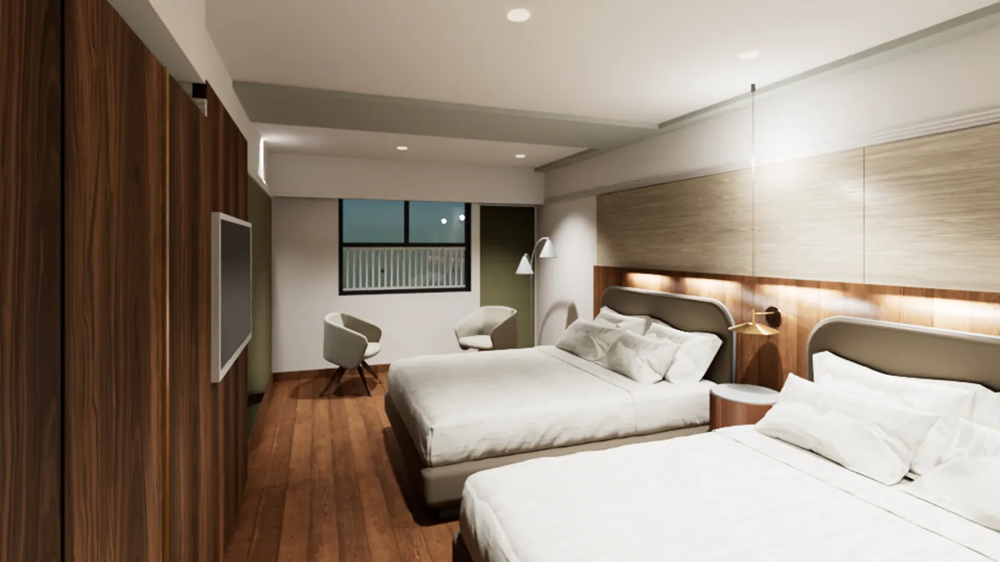
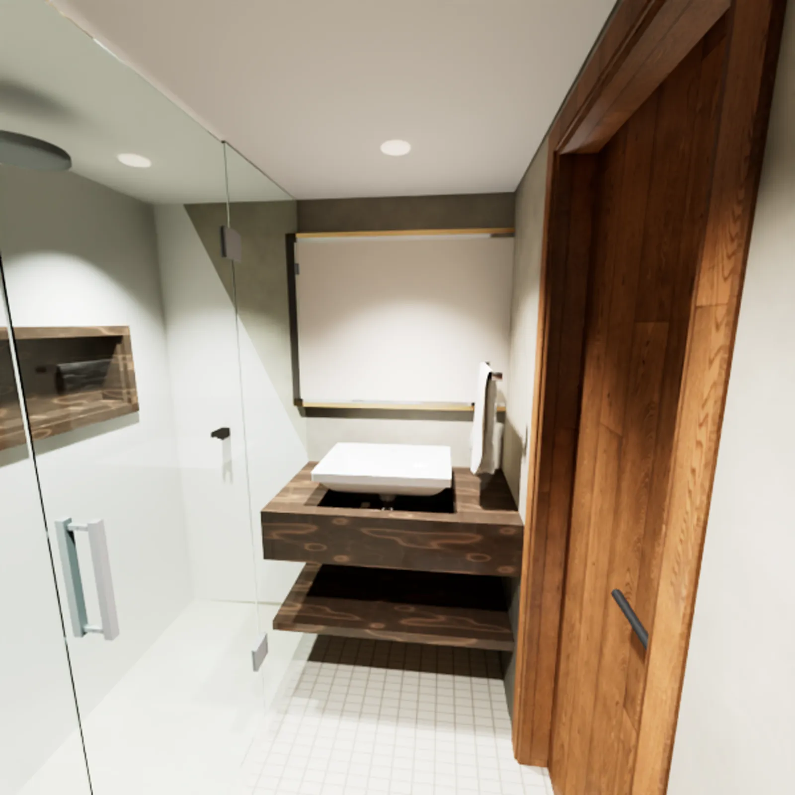

Estructuración BIM y contratación
BEP marco y operativo, requisitos EIR/AIR, matriz LOD 400, protocolo CDE y anexos de contratación.
Obligaciones BIM integradas a contratos BACO STUDIO
BACO STUDIO
Torre Suites / Propuesta BIM / v03
Propuesta BIM · v03 · Torre Suites · Hotel Estelar La Fontana
Un modelo para coordinar los diseños
BACO Studio gestiona la información y la coordinación BIM de la remodelación: de las condiciones existentes LOD 300 a la coordinación LOD 400, la obra y el gemelo digital.
Desliza
01 · El reto
Ordenar las obligaciones de cada especialista, reducir interferencias de diseño y mantener la trazabilidad de los cambios hasta la entrega del activo digital.
02 · Punto de partida
El escaneo 3D y el modelo de condiciones existentes LOD 300 los ejecuta un proveedor independiente contratado por el propietario. BACO revisa técnicamente la entrega.
Revisando entrega LOD 300
003 · Federación de modelos
Arquitectura e interiorismo, estructura, hidrosanitaria, red contra incendios, eléctrica y mecánica, federadas y coordinadas. Prende y apaga cada capa abajo cuando quieras.
04 · Coordinación de diseños
Separación mínima medida en el modelo de redes: —
Interferencia entre rociador y conduit en Piso 2. Queda asignada en la mesa técnica.
Ajusto el trazado y publico la versión actualizada en el CDE.
Aprobado. Queda en el registro de decisiones.
Flujo ilustrativo de la mesa BIM. El punto crítico sí es real: se calcula en vivo sobre 1001_Hotel_la_fotona_redes.rvt.
05 · Modelo de servicio
BEP marco y operativo, requisitos EIR/AIR, matriz LOD 400, protocolo CDE y anexos de contratación.
Obligaciones BIM integradas a contratosFederación de modelos, mesas técnicas, control de interferencias y registro de incidencias.
Trazabilidad de conflictos y decisionesMesa BIM semanal, RFI y cambios, revisión LOD 400 de instalación e informe mensual.
Vigencia documental en obraFederado as-built, planos récord, inventario de equipos y paquete de activos digitales.
Acta de transferencia06 · Ya en obra · Piso 2
Programación de obra de las habitaciones 214 a 225: inicio real el 01-sep-2026 y entrega conjunta del piso el 02-nov-2026, con control de redes antes de enchapes.
07 · Hasta el último detalle
Del federado a la habitación: muebles, baño, luminarias y materiales reales. Arrastra para girarla.


08 · Planos · Piso 2
Arquitectura, agua fría y caliente y desagües de las habitaciones 214 a 225: plantas, secciones, axonometrías y detalles de baño. Toca una lámina para verla en grande.
09 · Matriz de responsabilidades
Toca un actor para ver su responsabilidad contractual.
Establecer requisitos, administrar BEP/CDE, coordinar, verificar entregas e integrar el cierre digital.
10 · Oferta económica
Con IVA (19%): $0
Etapas A, B y D fijas: $111.000.000. Cada mes de obra: $23.000.000, o $13.800.000 con el descuento del 40% por sinergia (solo Etapa C).
Honorarios acumulados por mes (COP, sin IVA)
11 · Cierre digital
Consolidando modelo federado as-built
0Modelo informacional del activo. No incluye integración viva con sensores, BMS, IoT ni CMMS/CAFM.
Valor comercial base: $295.000.000 + IVA. Valor integrado condicionado: $221.400.000 + IVA.
Propuesta de BACO Studio S.A.S. · 9 de noviembre de 2026 · No es un sitio oficial de Hoteles Estelar.
Modelos: HLF_P2-P6.rvt · 1001_Hotel_la_fotona_redes.rvt · Hab. 216 (3ds Max)
Cargando modelo BIM